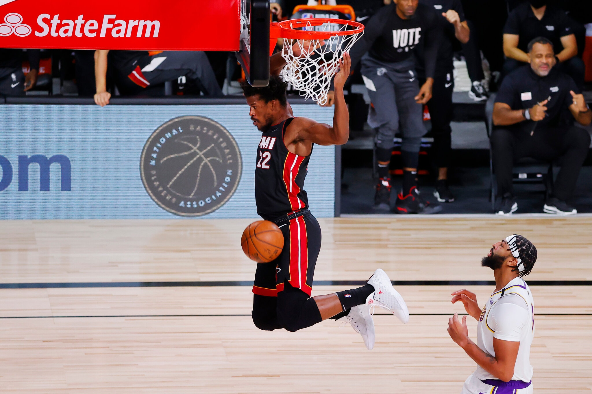

Last summer when Jimmy Butler signed with the Miami Heat, many were confused why he left a team that seemed primed for a championship run with him, to join a team that no one thought could make it to the finals by just adding him.
Reacting as only he could react. Butler told Chris Hayne of Yahoo Sport last summer.
"Motherf--kers act like I'm not a good basketball player. Like for real. Just think about that. Like I can't come in and make a huge difference. I'm not going to say 'carry a team' because nobody can do it by themselves and I mean that. I'm not putting it all on myself, but I know what I'm capable of. I know what I bring to any and all situations, and the group of guys that we have is the group of guys that I want to play with.”
But still many people just couldn’t see it. Even after Miami finished the season with the fourth-best record in the eastern conference, many still believe the Heat was another superstar away before they had a real chance of making it to the finals.
Words that Butler and Miami have been making their doubters eat all playoffs long. The Heat didn’t add another superstar player next to Butler to make it to the Finals but here they are. Doing it the exact way that people said they couldn’t.
Likes his comments to Hayne’s showed, Butler never doubted that the Heat can make it to the finals in his first year with the team. Because he knew when the moment called, he’ll be there to answer it for Miami.
And there was no better time than game 3 of the NBA Finals for Butler to answer that call.
Down 0-2 to the Los Angeles Lakers, and still missing both All-star center Bam Adebayo (neck) and starting point guard Goran Dragic (foot) due to injuries. This was Butlers' moment.
Finishing with 40 points (14-20 shooting), 11 rebounds, and 13 assists, in a 115-104, win over the Los Angeles Lakers; Joining a shortlist of players who have had a 40 point, Triple-Double, in the NBA finals without even attempting a three-pointer.
Kevin C. Cox/Getty Images
His performance in game 3 may have been one of the best NBA Final performances in recent history and it came when Miami needed it most.
Giving Butler the chance to remind his haters one last time that yes; he is a damn good basketball player.
Butler was called out by many NBA analysts and even some former coaches for not being aggressive enough after his 25 point (7-of-17), 8 rebound, 13 assist game two performance.
Despite all the noise, Butler said after game two that he was going to continue to make the right basketball play and trusting his teammates are going to make shots.
But from tip-off of game three, you could see this was a more aggressive Butler, whether he was listening to his haters or not.
Butler's first two shots of the game were dunks and he never looked back from there. Which probably had the crisis thinking they were right by saying he needs to “shoot more and pass less.”
But no, like when he signed with the Heat Butler also does things his way. While it did look like he was being more aggressive with his shot, his passing game never faded.
He finished game 3 with 13 assists, which is the same number of assist he ended game two with. Sticking to his word that he was going to continue to just make the right basketball play.
Even with Adebayo and Dragic out Butler continues to make the right play and that’s what makes him a good basketball player. His game three performance was just another example of all the ways Butler can affect the game.
Butler did it all for Miami, he took on the challenge of guarding LeBron James, while also being aggressive offensively; scoring, passing, and rebounding. That's the signs of a good player. Someone who can affect the game in multiple ways with or without the ball in their hand.
Butler also doesn’t mind taking a back seat when he has to. He has allowed younger players like Tyler Herro, Duncan Robinson and Kendrick Nunn to all come into their own during the season and this playoff run. Which has paid off for him big time.
Herro credits Butler for a lot of his success this year. Butler took Herro under his wing and showed him the ins and outs of the NBA. Herro would join Butler for his crazy early morning workouts during the summer.
After Herro’s unbelievable 37 point game in the Eastern Conference Finals, he has nothing but high praise for his mentor.
Showing that with the right fit Butler can be a leader too. Something that he has been criticized for in the past.
But all leaders lead in their own ways and Butler showed in game 3 that sometimes you just have to lead by example.
Miami is still down 1-2 in this series but no matter what the outcome of this series is, one thing is for sure Butler wouldn’t have to remind anyone how good he is at basketball again.
By Kayson Davis